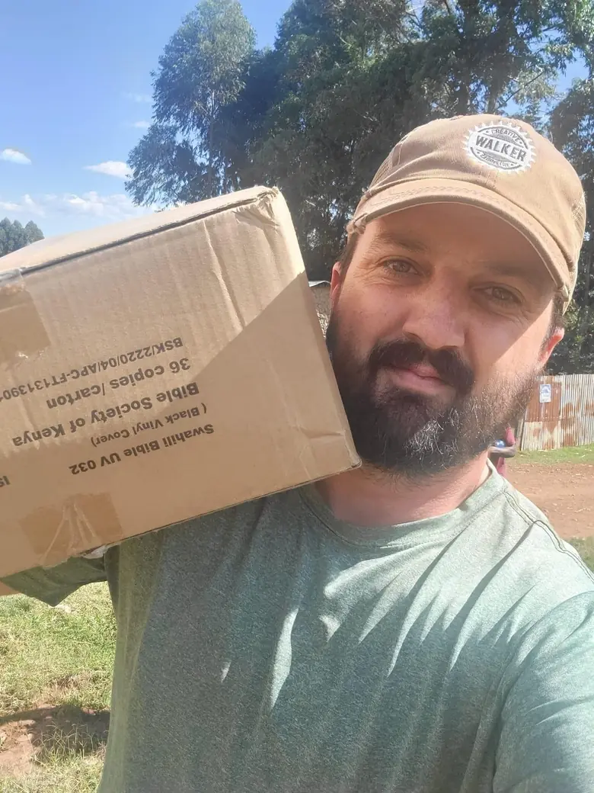

VillageServer isn't a tech startup. It's a ministry initiative that builds practical, offline-first tools so missionaries and local leaders can carry gospel resources into communities that ordinary websites don't reach.

Who we are
We're a small team with a simple belief: the technology should serve the mission, not become the center of it. Every decision — which device to support, which file format to use, how to organize a folder — gets made through one filter: will this work in a local leader's hands, in a place with no internet, under time pressure?
We work alongside missionaries, sending churches, and field organizations who are already doing the hard work. Our job is to extend their reach, not replace their relationships.
What we actually do
We build and support the tools missionaries and churches need to bring resources into hard-to-reach places. That includes:
- Raspberry Pi offline libraries — a local Wi-Fi library any phone can join without data
- Solar-powered field kits — for off-grid deployments where grid power isn't available
- Projector and audio setups — for group teaching in churches, schools, and evening gatherings
- Phone-sharing guides — step-by-step transfer routes for every device combination
- Custom content libraries — Scripture, audio, films, and training materials in local languages
- Printable field handouts — PDFs for every process, in plain language, designed for non-technical users
How we think about this work
Five principles guide every kit we build and every guide we write:
- Listen to the field worker first
Ask what they actually face before choosing any equipment. The right kit is shaped by the setting, not by what looks impressive.
- Choose the simplest tool
A phone transfer is better than a full server kit if it gets the job done. Add complexity only when the mission requires it.
- Package everything clearly
Labeled, documented, and repeatable by a non-technical person under pressure in the field.
- Test with real users
Watch where people get stuck, not where the plan says they should succeed. The first field test always reveals something the plan missed.
- Improve before scaling
Fix what's confusing, update the PDFs, simplify the process — before ordering more kits or sending more teams.
The initiative does not replace local ministry. It equips it.
Download the About Us PDF for board packets or donor introductions.
Download About Us PDF